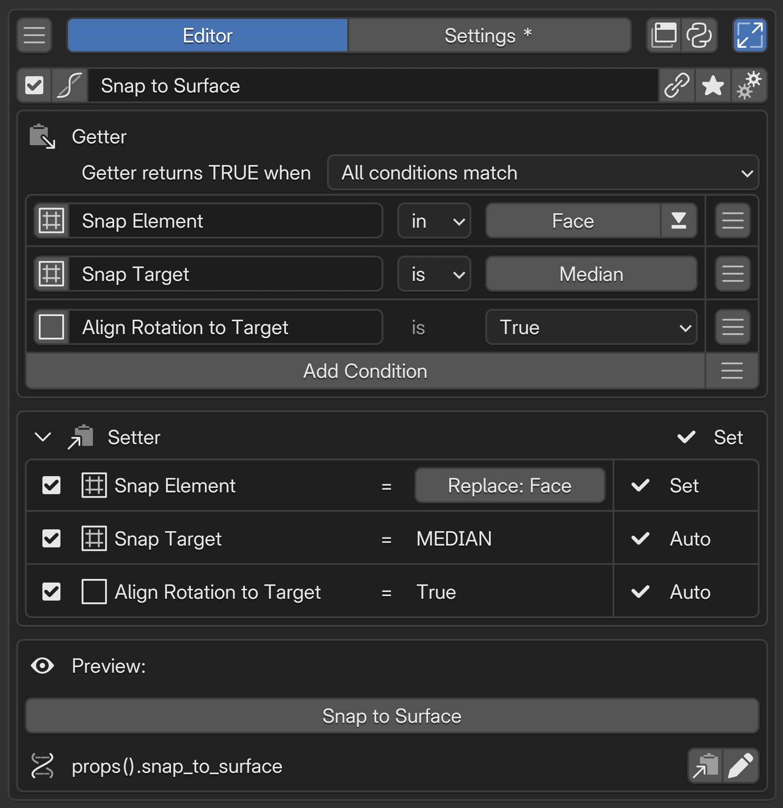

Property Stack Editor¶
Property Stack combines several Blender settings into one test of a working state. Its Getter reads the current state; its Setter changes the required settings together. You can also use it for evaluation alone.
Added in version 2.1: Added Property Stack, combining multi-condition evaluation with changes to settings.
Configuration guide — evaluate and change a state (for AI)
Name: Property Stack / Type ID: CONDITION. Evaluates conditions as a Boolean and combines the corresponding changes in one switch. Use Property to define a simple value, or Context Router to select a target by condition.
Getter: evaluates RNA properties, PME Properties, other Property Stacks, and similar sources using All or Any matching.
Setter: uses write rows derived from Getter conditions. Getter participation and Setter enabled state are separate; turn the Setter Off for evaluation-only conditions. Collapsing the section changes its display, not whether writes are enabled.
Write behavior: writes values for a requested TRUE / FALSE state; the Getter then determines the display again. Ordinary numbers, strings, and single-select Enums write only on TRUE by default. Boolean Auto and multi-select Enum Add / Remove act in both directions. FALSE does not restore previous values.
Result: All / Any combines Getter conditions. Any does not make the Setter choose one row; all enabled write rows are considered. Evaluation-only conditions or different manual values can keep the Getter from becoming TRUE after a write.
Writability: distinguish Read-only, Need, and target resolution failures. Unresolved issues in enabled rows stop the entire write during preflight. Auto / Set describe value preparation, not guaranteed runtime success.
Placement: reference it from another menu’s Menu tab to use it as a switch. Copy its script path from Preview; do not derive it from the display name.
Uses: switch several display settings together, show whether multiple conditions are satisfied, or report a state with While True HUD.
Input limits: up to 128 Getter conditions and 128 Setter rows.
Logic beyond paths and comparisons: reference a value calculated by a PME Property Getter through the condition slot’s Menu tab (storage: Addon Preferences). A Getter alone is sufficient for evaluation. If no other conditions are needed, the PME Property can handle display and interaction on its own. See choosing an approach.
Constraints: this differs from a Macro running ordinary Command slots in sequence. Do not assume a standalone hotkey execution model. Check diagnostics for unwritable targets and missing references.
See Getter for evaluation, Setter for changes, and While True HUD for notification placement and color.
Interface and editing workflow¶

NName and basic controlsCheck the name and enabled state of the combined settings. 1GetterCombine conditions to evaluate the current state. 2SetterSet the values to write when operated and enable or disable individual rows. 3PreviewCheck the appearance and behavior of the switch and copy its reference path. AAdvanced settingsOpen advanced settings to configure While True notifications and other options.Name and basic controls / Advanced settings
How Getter and Setter work together¶
A checkbox shows whether a setting is on; clicking it changes the setting. Getter handles what you see, and Setter handles what you change.
Getter shows the current state. It reads Blender values and uses the checkmark to show whether they match the conditions.
Setter changes settings in response to input. It writes the configured values to Blender when you click.
For example, combine X-Ray and Wireframe in one switch. The Getter checks the switch when both are on; the Setter changes both settings when you press it. Turn off X-Ray elsewhere, and the Getter reads that change and removes the checkmark.
Just as a normal widget handles one property, Property Stack handles a combination of properties as one state. Getter checks whether that state is active; Setter applies the required values together. Settings scattered across the interface can be inspected and changed from one switch.
Name and basic controls¶
The name labels this combination of settings. It is separate from the Property ID used by scripts. See the shared selected menu settings.
Getter — evaluate the current state¶
Use Add Condition, then specify the source value, comparison operator, and comparison value. The rightmost menu offers presets such as mode and object type. Slot names are labels for identifying conditions.
Editing a Getter comparison value does not change Blender’s value. It sets the test used to evaluate the current value.
Match rule |
Use |
|---|---|
All conditions match |
Show whether every setting has its desired value |
Any condition matches |
Show whether at least one condition matches |
Only enabled, fully configured conditions participate. With no participating conditions, the result is FALSE. Disabling a condition is distinct from testing whether its value is False.
Use comparisons appropriate to the source type, including numbers, strings, Enums, and vector components. Comparison operators are shared with Context Router. See comparison operators and values for the type reference.
Reading and writing
Read-only properties can be used in Getter if their values are readable. Testing the current mode, for example, does not by itself create a Setter that changes modes.
Unresolvable conditions do not match. Comparisons such as “is False” or “is not” do not turn a read failure into a match.
C.space_dataand similar sources resolve to different data and properties depending on the editor evaluating them. Type information helps interpret the path; it does not switch editors. Check both reading and writing where the stack will be used.
Values and conditions that need more than a property path
Use a regular PME Property when you need to aggregate data, calculate a value, or perform logic that a property path alone cannot express. Write Python in its Getter and return a single Boolean, number, Enum, or other supported value.
To display or operate on one value: use the PME Property directly. Reference it from another menu’s Menu tab to place its widget. Configure its Setter if writing requires custom logic.
To combine it with branches or other conditions: reference the PME Property from the condition slot’s Menu tab, then compare the returned value. Context Router uses the result to select a target; Property Stack uses it to evaluate its Getter state.
Set the linked PME Property’s storage to Addon Preferences. Read-only properties with only a Getter also work as conditions. Choose the return type and the value to return when no target exists. See Property Editor: Getter / Setter for configuration.
Setter — define the changes for each condition¶
Setter lists write rows corresponding to Getter conditions. Choose participating rows with the left checkboxes, set values in the center, and check readiness on the right. The triangle in the Setter heading expands or collapses these rows. Collapsing them does not disable writes.
Auto / Set / Need / Off / Read-only¶
Display |
Meaning |
What to configure |
|---|---|---|
Auto |
The write value is derived from the Getter condition |
Check the target and value; for example, |
Set |
A write value or method has been set manually |
Check that it satisfies the intended condition |
Need |
A write value must be specified |
Enter a value, or turn the Setter row Off if it is for evaluation only |
Off |
This row does not write |
Enable its checkbox if needed. Getter can still use the condition |
Read-only |
Direct writes to this source are not allowed |
Use it as a Getter condition. The Setter checkbox cannot remove this restriction |
For example, > 10 is satisfied by both 11 and 20. That is sufficient for Getter, but Setter needs a concrete value and shows Need. Entering 20 changes it to Set.
The status on the Setter heading summarizes its rows. Off, for example, means all rows are Off; Need means a row needs a value. Check Preview for the Property Stack’s current TRUE / FALSE state.
Evaluation only, or evaluation and writing¶
Getter condition |
Corresponding Setter |
Behavior |
|---|---|---|
Enabled and configured |
Enabled with Auto / Set |
Evaluates the condition and writes on interaction |
Enabled and configured |
Off / Read-only |
Evaluates only |
Enabled and configured |
Need |
Can evaluate, but needs a value before writing |
Disabled |
Off |
Excludes the condition and stops its corresponding write |
For example, keep “is Object Mode” as a condition while writing only the display settings you want to change. Set every Setter row to Off to use the stack solely for status display or While True HUD.
Turning only the Setter Off leaves its Getter condition unchanged. Re-enabling it yields Auto / Set / Need according to the condition and retained settings.
Disabling a Getter condition also turns its Setter Off. Check Setter state when re-enabling evaluation. A manually disabled write remains Off even after its Getter is re-enabled.
Conditions linked to a PME Property or another Property Stack have their Setter Off initially. When enabled, writability still depends on the linked target’s configuration. A Getter-only PME Property can be evaluated, but writes require its Setter.
What TRUE and FALSE write¶
The following describes standard write settings. Off rows change nothing for either request.
Setter type |
TRUE request |
FALSE request |
|---|---|---|
Boolean Auto |
The value matching Getter: True for |
The opposite value |
Number, string, single-select Enum, or similar value (including a manually set Boolean) |
The specified value |
No change |
Multi-select Enum Add |
Add the specified choices |
Remove those choices |
Multi-select Enum Remove |
Remove the specified choices |
Add those choices |
Multi-select Enum Replace |
Replace the whole selection with the specified choices |
No change |
Getter still determines the display after writing
All / Any controls evaluation. Even with Any, Setter does not choose just one condition to write. Enabled write rows are considered.
Conditions without writes still participate in evaluation. If an Object Mode condition is false, changing display settings leaves All false. Check manual write values separately from Getter comparison values.
FALSE does not restore the previous state. The reverse of Add, for example, removes the choices. It does not remember whether those choices were already present before the operation.
For custom calculations or write procedures, define and reference a PME Property Getter / Setter. See also when to use PME Property.
Preview / Property ID¶
Preview shows the current evaluation result and lets you test the configured changes.
Display |
Write availability |
|---|---|
Toggle: available |
Writes exist for both TRUE and FALSE. This does not mean every row writes in both directions |
Toggle: TRUE only |
Writes exist only for TRUE. FALSE changes no values |
Toggle: unavailable |
No writes are available, or preparation is incomplete. Check the reason that follows |
Need or unresolved references in enabled Setter rows stop the entire write during preflight. Fix the values or references, or turn unnecessary write rows Off. Verify Getter readability and Setter writability separately.
Auto / Set and Toggle status do not guarantee runtime success. If a write fails during execution, earlier changes are not necessarily rolled back together.
You can also edit and Lock the Property ID and copy its reference path here.
Added in version 2.1: Manage the display name separately from the Property ID used by scripts.
See Property ID for ID restrictions and Lock. If you expect to rename the stack later, decide how to preserve script references.
Check the configuration¶
Test states where all conditions match, only some match, and the target is absent. When using Setter, check which values change for TRUE and FALSE, and which rows do nothing.
Advanced settings¶

Open these with the advanced settings button at the right end of the name row. This section shows storage information and While True notification settings. Storage is fixed at Store in Addon Preferences; unlike Property Editor, it cannot switch to Scene / Object. Set a fixed notification message or Python code that returns a string with return.
While True HUD — notify while conditions match¶
Added in version 2.1: Display a message or frame in the specified editor while the conditions are satisfied.
Enable While True, then set the message and destination.
Area Type: editor in which to display the notification.
Style / Alignment: presentation and placement.
Accent Color: whether to use a color, and which color.
Before adjusting the message or color, check which state Getter is reporting. The notification’s destination is not necessarily the location of the data referenced by its conditions.